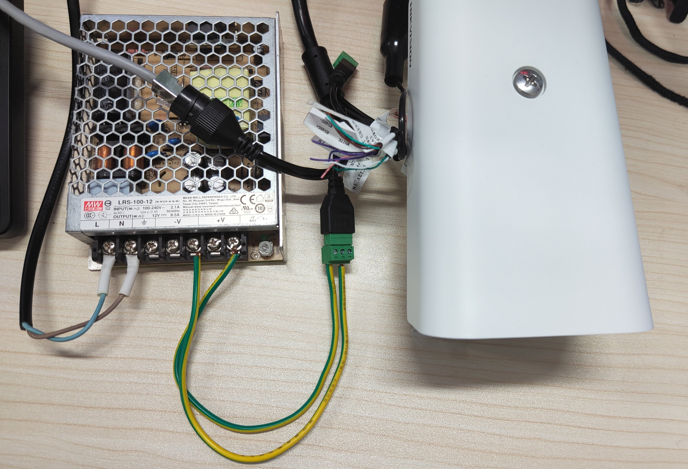

海康威视摄像头试用
文章简介
想通过这个记录一下海康威视摄像头使用的过程，主要功能时试用他家的AI开放平台实现自定义数据集训练，最终生成对应的文件导入摄像头，测试效果。
使用过程
摄像机简介
型号：DS-2XA8T25E-IHS200W冷链专用摄像机；AI开放平台G5 智定义系列网络像机。主要用到的是其“支持AI开放平台，支持AI模型的下发和运行，生成检测结果并上传业务平台”，其他具体功能参数详见官网介绍.
硬件准备
摄像机未配备电源适配器，只是留有12v电源接口，还有用到的是供数据传输的以太网口。主要用到的就是这两个接口，其他接口就不赘述了。
因此需要准备一个220v转12v变压、一些必要的线、网线。摄像机电源接口标准有正负标识：12V+接 “1”、12V-接“3”。接之前最好用万用表测试变压器12v输出口是不是12v，确保输出电压准确，防止接入相机后损坏相机。
软件准备
前往海康威视AI开放平台官网)，下载两个软件：一站式训练平台、ivms-4200网络视频监控客户端。一站式训练平台是为了进行数据集导入，进行模型训练用的；ivms-4200网络视频监控客户端是为了配置和预览摄像头用的。
PS：这里我吐槽一下，这是我第二次用海康威视摄像头，之前也是老师让使用一下他家AI开放平台，可是之前用的摄像头型号不支持ai训练模型导入。当初我在官网下载IVMS-4200的时候，下载不了，只有一个软件简介。好在这次我在他家AI开放平台官网找到了下载路径，不知道为什么他要把这如果软件藏这么深。
操作流程
摄像头初始化
连接好后，浏览器输入ip：198.162.1.64；接着出现登录界面，创建账号密码登录即可进入主见面。
这里顺便附上它官方提供的一个操作手册。
点击“应用仓库”—>点击”基本信息”—>找到”AI开放平台”点击启用。
到此摄像机的初始化就算完成了。接下来要做的就是AI开放平台的使用了。
AI开放平台的使用
数据集导入
将之前下载好的软件”一站式训练平台”打开，注册账号登录。
创建新的数据服务训练集：
选择适当的算法类型，不同的算法类型针对不同应用场景，这边我试用的是物体检测。
接着点击导入，将事先下载准备好的数据集导入(这里放一个比较好的数据集网站：极市开发者平台。点击”导入”，选择”本地数据导入”。
注意：数据集需要大于40张图片才能达到训练标注！
图片标注
数据集导入完成便要开始对图片进行标注了，点击”查看”，对未标注的图片进行标注。
进入标注界面，对你需要标注的人或物体进行框选，接着在右边他会提醒你创建检测标签。
创建完后
将所有图片标注完，关闭窗口即可，回到界面，点击”发布”。
模型训练
回到主界面，选择”模型服务”，选择”物体检测”,进入”创建模型”。模型创建结束点击”训练模型”中”有监督训练”->”创建训练”。
选择刚创建的模型，选择“本地部署” ，AI摄像头中勾选“G5”，“添加数据集”，最后点击“确认”。等待训练完成即可。
完成上述操作，你可以“校验模型”上传一些图片，在线校验训练完成的模型效果如何。最后就是下载模型，下载文件中包含一个.json文件，一个bin文件。
模型导入
将已完成训练的算法模型部署到设备中，再结合设备中已有的算法，精确实现各类检测分类任务。
步骤1：进入“配置→AI平台”。
说明：若无“AI平台”，可进入“配置→系统→系统设置→智能资源分配”，选择“AI平台”，根据界面提示重启设备。
步骤2：添加设备模型包：设备支持3种类型模型包，请根据需求选择并导入。导入时请选择模型包和对应的Label文件，并对模型包进行命名。
- 检测模型：检测和跟踪画面中的特定目标，并提供目标的检测结果和坐标位置。
- 分类模型：对图片或目标进行属性分类。
- 混合模型：检测画面中的目标，并对目标进行分类。
说明：设备可添加多个模型包，设备支持的最大可添加模型包数量可在“支持模型包数”处查看。
步骤3：将模型包拖拽至引擎，使模型与引擎绑定。
最后登录ivms-4200客户端绑定摄像头，即可预览实际效果。
PS：模型导入还有一种方法，直接通过ivms-4200客户端配置，具体参考官方教程
总结感悟
这次试用其实不是很顺利，一开始数据的选择，模型的选择都出现了问题。整个过程中和导师、客服积极沟通，在官网寻找教程最终成功达到预期效果。
说实话一开始还是比较抗拒这次试用的，总觉得它不能成，不过还好坚持了下来，也感谢导师一直在跟我想办法。所以以后凡事得沉下心来做，不能带着情绪。

微信号:Shaun_cy
QQ号:1207444851